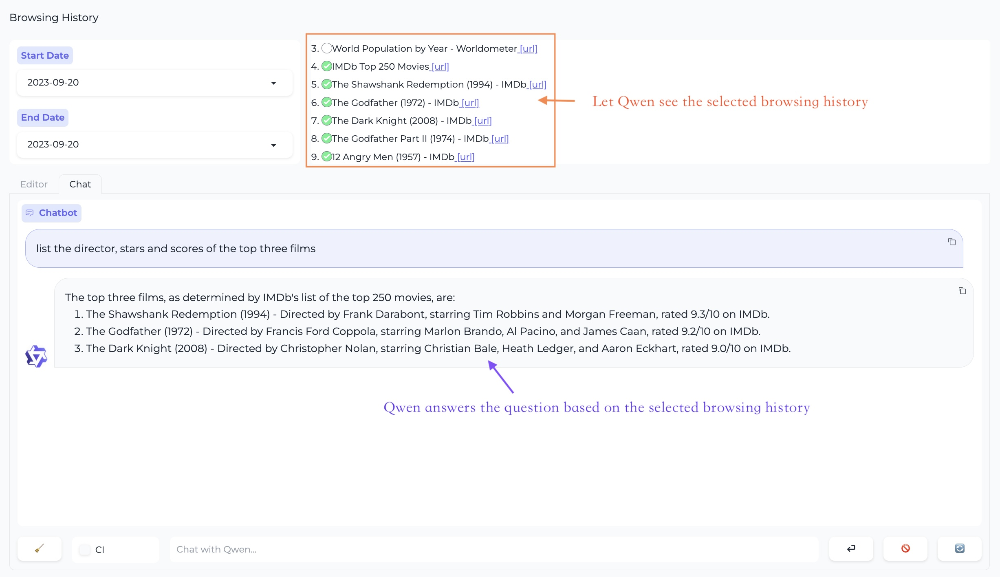
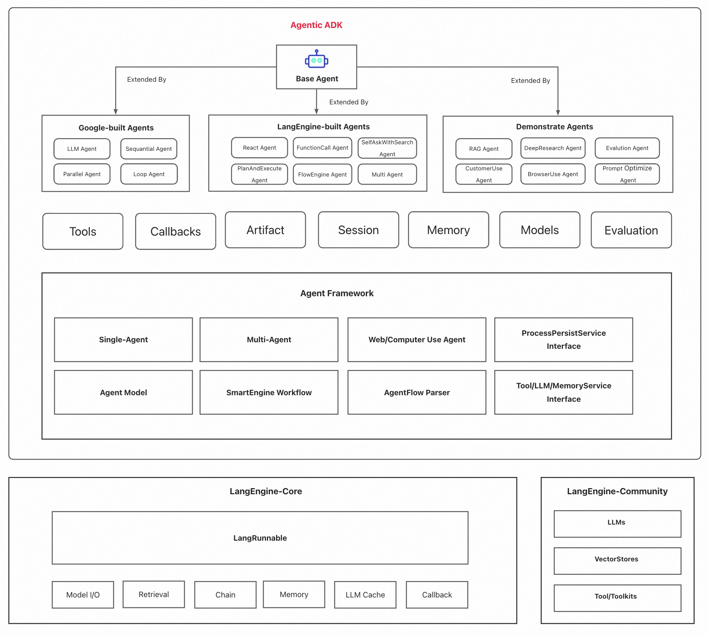
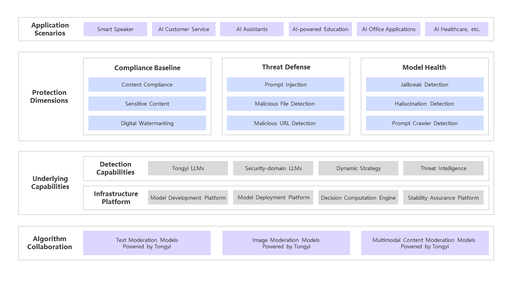

Alibaba Cloud’s central AI platform is Model Studio (百炼/Bailian), hosting 300+ models via an OpenAI-compatible API through DashScope.
| Category | Key Models | Context | Notes |
|---|---|---|---|
| Qwen3.7-Max | Proprietary flagship (params undisclosed) | 1M | 80.4% SWE-bench Verified, 60.6% SWE-bench Pro; reasoning agent model |
| Qwen3.6 | 27B (dense), 35B-A3B (MoE) | 262K | Agentic coding + thinking preservation; real-world utility focus |
| Qwen3.5 | 0.8B–397B-A17B (8 sizes) | 262K (~1M) | Multimodal (text+vision), thinking mode, 201 languages, MCP support |
| Qwen3 | 0.6B–235B-A22B (dense + MoE) | 262K | Hybrid thinking, 119 languages, Apache 2.0 |
| Qwen3-Coder | 480B-A35B, 30B-A3B | 256K (~1M) | Open-weight; 358 coding languages; matches Claude Sonnet 4 on agentic benchmarks |
| Qwen3-VL | Plus, Flash (API) | 262K | Vision-language; images, video, GUI, OCR, math reasoning |
| Qwen3.5-Omni | Plus, Flash (API) | 262K | Full multimodal: text + vision + audio + video in, text/audio out |
| Model | Input | Output | Notes |
|---|---|---|---|
| Qwen3.5-Flash | $0.029 | $0.287 | Tiered by prompt length; higher rates above 128K |
| Qwen3-Coder-Plus | $1.00 | $5.00 | Tiered; up to $6/$60 for 256K–1M prompts |
| Qwen3.6-Plus | $0.28 | $1.67 | Tiered; ¥2/¥12 for ≤256K, higher above |
| Qwen3.7-Max | $1.65 | $4.97 | ¥12/¥36; Batch API 50% off; context cache available |
Coding Plan: Subscription bundling multiple coding-optimized models (Qwen3-Coder, etc.) at reduced rates. Batch API offers 50% off for non-real-time workloads.
Alibaba Cloud provides a layered agent stack — from open-source SDKs for developers who want full control, to managed cloud runtimes for production safety, to no-code builders for rapid prototyping. The common thread: everything routes through Model Studio (Bailian) as the unified model gateway.
A lightweight Python framework for building LLM-powered agent applications on top of Qwen models. Provides modular building blocks — base model, tool registry, and specialized agent classes — for constructing systems that perform multi-step tool use, planning, and memory management. Ideal for developers who want programmatic control over agent orchestration without platform lock-in.

A Java-based agent development framework from Alibaba International (AIDC) for building, evaluating, and deploying multi-agent systems with streaming interaction and visual debugging. Unlike Qwen-Agent’s Python-first approach, ADK targets Java enterprise environments and natively connects to Bailian for model access. Built on RxJava3 reactive patterns with a DAG-based process engine.

An agentic AI framework built on Spring AI, designed for Java developers building generative AI applications on Alibaba Cloud. Provides a graph-based orchestration engine (DAG structure) for single-agent, multi-agent, and complex workflow orchestration. Integrates with Bailian for model access and includes an MCP registry for external tool integration — the Spring-native alternative to Agentic ADK.
A fully managed, cloud-native automation execution platform that provides isolated sandbox environments for AI agents to safely control browsers, desktops, mobile devices, and code execution. Each operation runs in a dedicated, hardened container with network segmentation and strict privilege boundaries — suitable for running untrusted or autonomous agent workloads at scale without exposing host systems.
Bailian’s no-code application builders for creating AI-powered solutions without writing code. Two builder types: the Agent application (prompt-driven, autonomous tool selection) and the Workflow application (drag-and-drop visual node editor for deterministic multi-step pipelines). Both integrate with Model Studio’s RAG knowledge base, native tools, and third-party extensions.
Two complementary tool ecosystems for agent capability extension. MCP (Model Context Protocol) support on Model Studio allows AI models to connect to external tools and datasets through MCP endpoints — Alibaba Cloud provides official open-source MCP servers for cloud infrastructure. The Agent Skills Portal is a centralized catalog of pre-validated capability packs that grant AI agents standardized, secure access to cloud infrastructure through plain text prompts.
All Model Studio (DashScope) API requests undergo mandatory content moderation on both input and output (cannot be disabled; returns 400 DataInspectionFailed when flagged). For configurable, production-grade safety enforcement, Alibaba Cloud offers two complementary layers:
A comprehensive content safety platform that integrates with Model Studio via API, AI Gateway, or WAF 3.0. Provides real-time (<1s latency) filtering across 10+ categories with customizable thresholds, whitelist/blacklist management, and proprietary dataset training. Covers text, image, audio, and video moderation.

A dedicated safety guardrail model in the Qwen family for self-hosted deployments. Available in 0.6B, 4B, and 8B parameter sizes with support for 119 languages. Uses a three-tier classification system (Safe / Unsafe / Controversial) rather than binary classification, enabling more nuanced content moderation decisions.
Data Privacy: Model Studio guarantees data is never used for model training. Zero retention for direct API calls (⚠️ Assistant API retains conversation history). AES-256 encryption in transit and at rest.
Certifications: SOC 2 Type 2, ISO 27001/27017/27018/27701, GDPR-aligned, HIPAA. Regional: MLPS 2.0 (China), MTCS (Singapore), C5 (Germany), K-ISMS (Korea). AI-specific: AIC4 (German AI Cloud Compliance). VPC access: PrivateLink in Singapore and China (Beijing); not yet US (Virginia).
Alibaba advantage: Open-source guardrail model (Qwen3Guard) for self-hosted/on-prem; digital watermarking; broader multi-modal coverage; three-tier severity classification; strong Asia-Pacific compliance coverage.
Bedrock advantage: Automated Reasoning Checks with mathematical verification (unique); more granular PII entity types with structured redaction; code-specific protections; more mature safety transparency and documentation.